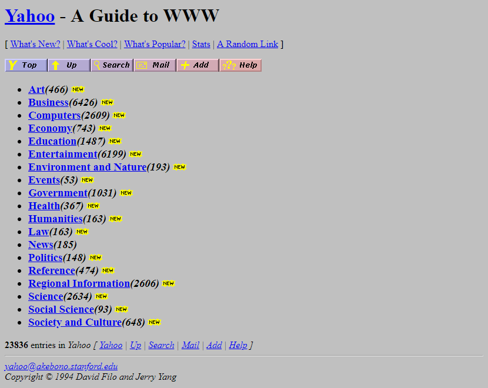
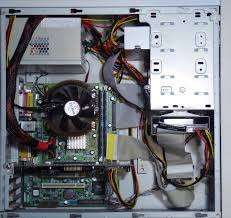

-
Apple IIe
Minooka Jr. HighApple IIe, The Apple IIe is the third model in the Apple II series of personal computers produced by Apple Computer. We play Oregon trail video game and used 5.5 inch floopy drives to load software and applications.

-
First Email
craig-barkley@uiowa.eduI recieved my first email while enrolled at University of Iowa; Nursing Bachelors Degree.
-
World Wide Web
First time surfing online.While in the Airforce, at an off duty party, a coworker started their computer and logged on to the "Internet". I dont think there was even a browser. So he entered a few URL's to show me the "Network"
 -
Airforce Applications
From 1996 - 2000While in the Airforce at the end of the 90's, I used and was introduced to these technologies; Oracle DataBase for saving training data. The Microsoft Office for administrative tasks and Netscape Navigator for initially viewing the web.


-
First Personal Email
Hot Mail AccountWhile in the Airforce deployed to Panama, I was reading through a work email from an old friend who was using HotMail and his email client. After going out to the website, I set up my first free email service that was not connected to a school or work institution. Hotmail was purchased by Microsoft in December 1997, Hotmail sold to Microsoft for a reported $400 million(Wiki).
-
Software
First Programming LanguagesAfter exiting the Airforce, I finished my MIS degree at SIU Carbondale, IL. While in classes I took some Security Networking courses, learned about Virtual Machines and how dangerous it is to maintain your data off site, the opposite of Cloud Computing. I learned some basic Visual Basic and SQL.
-
First Lap Top
Cost: $2400.00 in 2001 is equal to $3,582.65 in 2019.My first laptop was from a company called GateWay Computers, from the Little Rock Store. It came with an AOL cd and I used that to "Surf the Web", and use Chat Rooms to get familiar with instant messagging. As well as an AOL email and utilizing the AOL portal.

-
Computer Virus
3.5 inch FloppyIn the year 2002, there was the Internet worm “Klez”. This virus was first detected on October 26, 2001 and to the current time has still not lost its place on the list of most widespread virus threats. My first virus was a worm that everyone was getting and easily enough I called a friend on the celluar phone, went to his house and downloaded the patch or anti-virus onto a 3.5 floppy disk, brought that back to my computer, put it in the drive and started the computer.
-
Computer Work
Hardware and Software.By 2003, I had finished my MIS degree and was working on building my first computer from scratch using the A+ Certification book as a guide. I was coding in sql, visual basic and some asp.net and I was taking night time courses in network security.

-
Apple IIe
Minooka Jr. HighApple IIe, The Apple IIe is the third model in the Apple II series of personal computers produced by Apple Computer. We play Oregon trail video game and used 5.5 inch floopy drives to load software and applications.